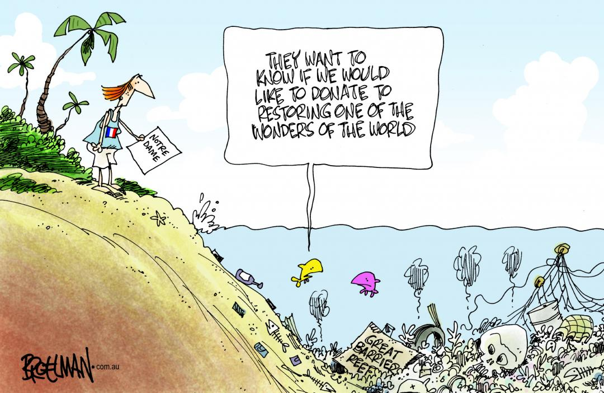

Political Efforts
Political outreach for the Great Barrier Reef focuses on engaging policymakers to prioritize the reef's protection through legislation, funding, and international cooperation. Advocates work to highlight the reef's ecological, cultural, and economic importance, urging governments to address climate change, reduce pollution, and support sustainable practices. By fostering dialogue and raising public awareness, political outreach ensures that the reef remains a global conservation priority.
1. Reef Authority: The Great Barrier Reef Marine Park Authority (Reef Authority) is the principal agency responsible for managing and protecting the Great Barrier Reef, ensuring its conservation through regulations, research, and community partnerships.
2. Reef 2050 Long-Term Sustainability Plan: The Reef 2050 Long-Term Sustainability Plan is Australia’s comprehensive strategy to protect and sustain the Great Barrier Reef’s ecological, cultural, and economic values through collaborative action and adaptive management.
Reef 2050 Long-Term Sustainability Plan (link)
To explore the history of conservation efforts for the Great Barrier Reef, please visit the History tab on our homepage. If you're interested in supporting the reef, there are many ways you can get involved. Browse through the sections on community-led conservation, political initiatives, donations, and petitions to learn how you can make a difference.